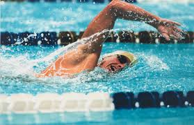
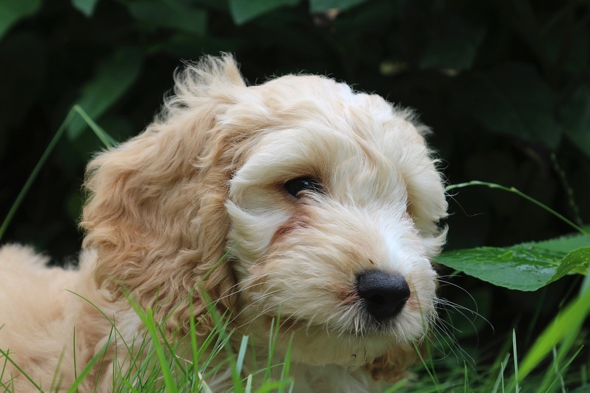

I love go8ing to concerts because I enjoy a lot of music and they are a lot of fun.I have traveled a lot in my life, but I would still love to explore more places around the world.I love going to the beach in the summer with my friends and family.

I love going to swim, and I do it competitively throughout the year.

Cockapoo puppies are my favorite kind of dog, I have a two year old cockapoo named Ollie.

.jpg "a beach is a pebbly or sandy shore, especially by the ocean between high- and low-water marks")